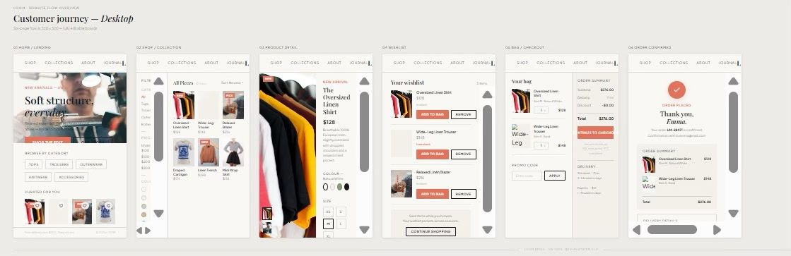
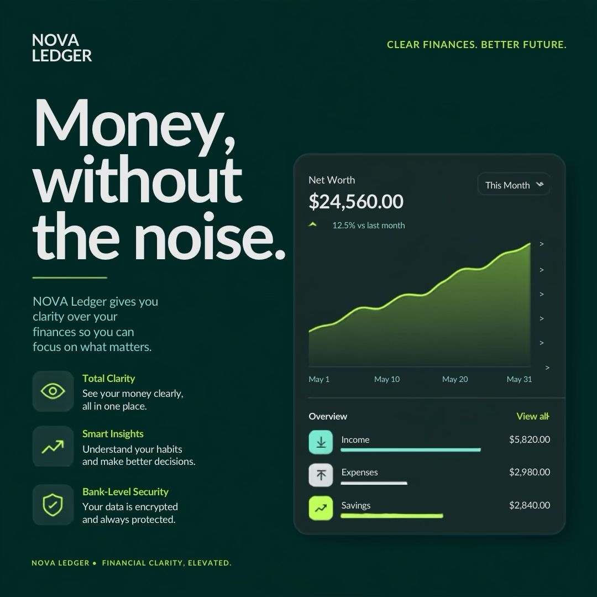
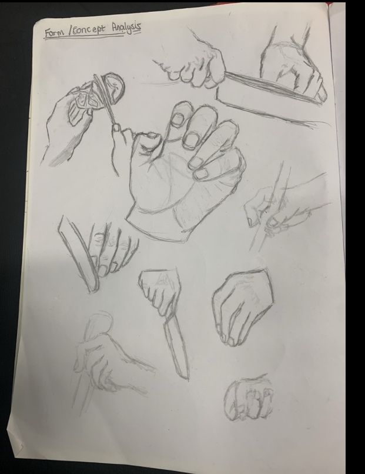
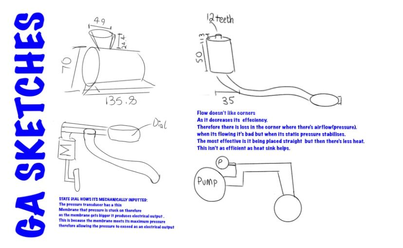
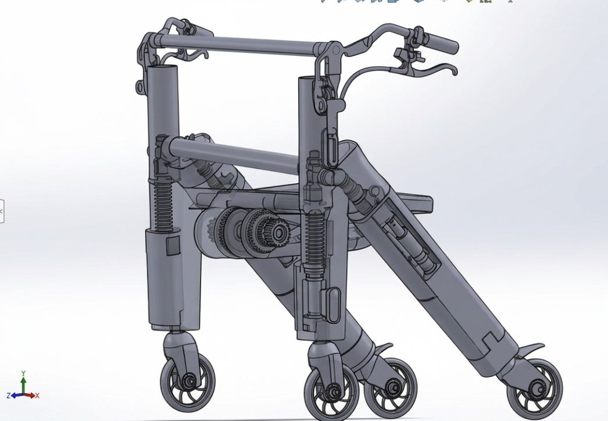
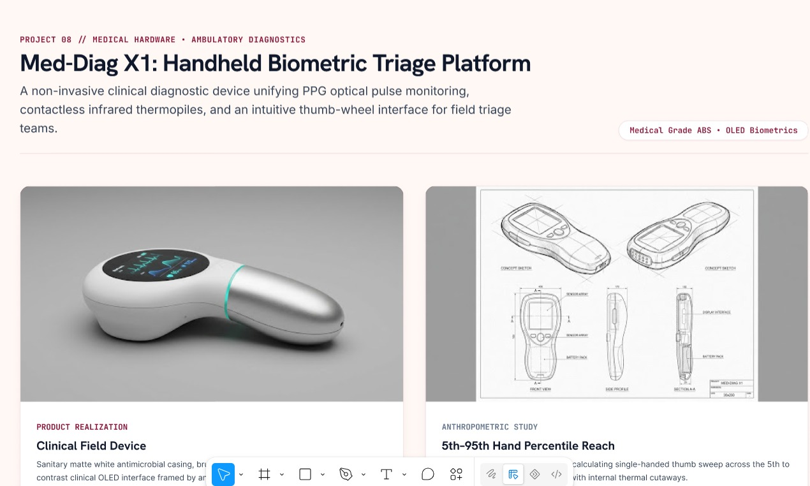

Archive
Everything,
in one place.
Twenty-one projects spanning product design, design engineering, digital product work and a continuous sketching practice. Filter by discipline.

SmartWalker
2025 · Enhancing independent mobilityAn intelligent rollator that monitors posture, detects obstacles, analyses gait and calls for help if the user falls — designed to be affordable as well as clever.

LOOM
2025 · End-to-end e-commerce UX/UIA fully functioning e-commerce experience for considered wardrobe and home goods — built as a sandbox to show the complete UX and UI process.

Nova Ledger
2025 · Financial clarity, elevatedA dark-mode concept advertisement carousel for a personal finance platform — a weekend sprint in layout, typography and colour logic.

Cobra Coffee Machine
2025 · Form, flow and internal architectureA start-to-finish design development of a modern coffee machine, with a design language drawn from the elegance and posture of a cobra.

Cocomelon Pacifier
2025 · Child safety, materials and circular economyA pacifier developed around a single-mum persona, where material choice is not a styling decision — it is the whole product.

Rugged Speaker
2023 · Where the design journey startedMy very first university design project — revisiting it shows how a simple geometric form becomes a considered design feature through structured iteration.

Prosthetic Hand
2025 · Designed around how a chef actually worksA prosthetic hand for use in a professional kitchen — built from a study of how a hand actually grips, holds and manipulates a knife.

Pump System
2025 · The paper trail behind the productA full engineering paper trail — geometry sketches, system block diagram, circuit schematic, sizing calculations and CAD — for a pressure pump system.

Breathalyser
2024 · Sketch, CAD, renderA handheld alcohol breathalyser taken through the full pipeline — red-line concepts, parametric CAD and a high-fidelity render.

Professor Layton Device
2024 · World-building through formA real-world, tactile interpretation of a handheld communication device inspired by Nintendo's Professor Layton — world-building through form.

Audi R8 Form Analysis
2025 · Form is functionA concept and form analysis of the Audi R8 — how pure performance shapes every line on the page.

Underwater Drone
2024 · Golden Snitch inspiredEarly-stage concept iterations for an underwater drone, inspired by the Golden Snitch from Harry Potter.

Pizza Oven
2025 · Sketch, mockup, renderA pizza oven concept developed sketch-first, then proven in cardboard, then refined in render.

Embedded Systems Series
2024 · Understanding the brain behind modern devicesA beginner's guide to embedded systems — block diagrams, component comparisons and applications, written and drawn to be genuinely readable.

Sketchbook
2024 · Why I still can't give it upA page from the notebook: raw ideation for a portable speaker, and why the pen-and-paper habit still drives the process.

Form Analysis & CAD
2024 · Toaster breakdown and CAD workflowA self-set challenge to post three to four times a week, focused purely on sketches and form analysis — starting with a toaster.

Portfolio Deck
2025 · The printed bookThe printed portfolio: four projects — Smart Walker, Coffee Machine, Speaker and Drone — sequenced from research to outcome.

Design Engineering Graduand
2025 · BSc Product Design & TechnologyBSc Product Design & Technology from Aston University — CAD, embedded C++, manufacturing and commercial costing in one skill set.

Aura
2025 · Ultrasonic microcurrent facial contouring systemHigh-precision skincare hardware marrying capacitive skin-contact gating, 3 MHz ultrasonic infusion and biosafe anodised champagne gold electrode nodes.

Botanic Rituals
2025 · Limited apothecary batch — structure and volumetricsA limited apothecary batch of cold-pressed botanic seed oil — packaging structure, volumetrics and swatch reference for a clean apothecary ritual.

Med-Diag X1
2025 · Handheld biometric triage platformA non-invasive clinical diagnostic device unifying PPG optical pulse monitoring, contactless infrared thermopiles and a thumb-wheel interface for field triage teams.
21 projects · all imagery is the designer’s own work.